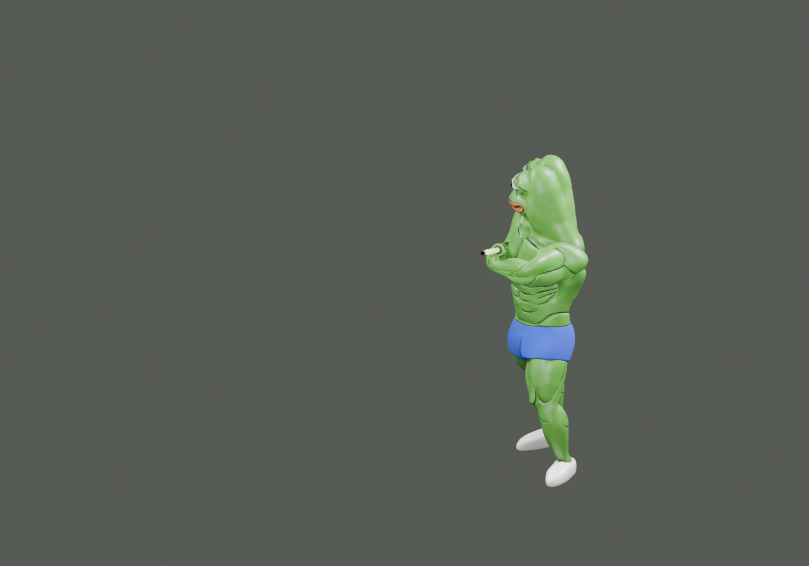
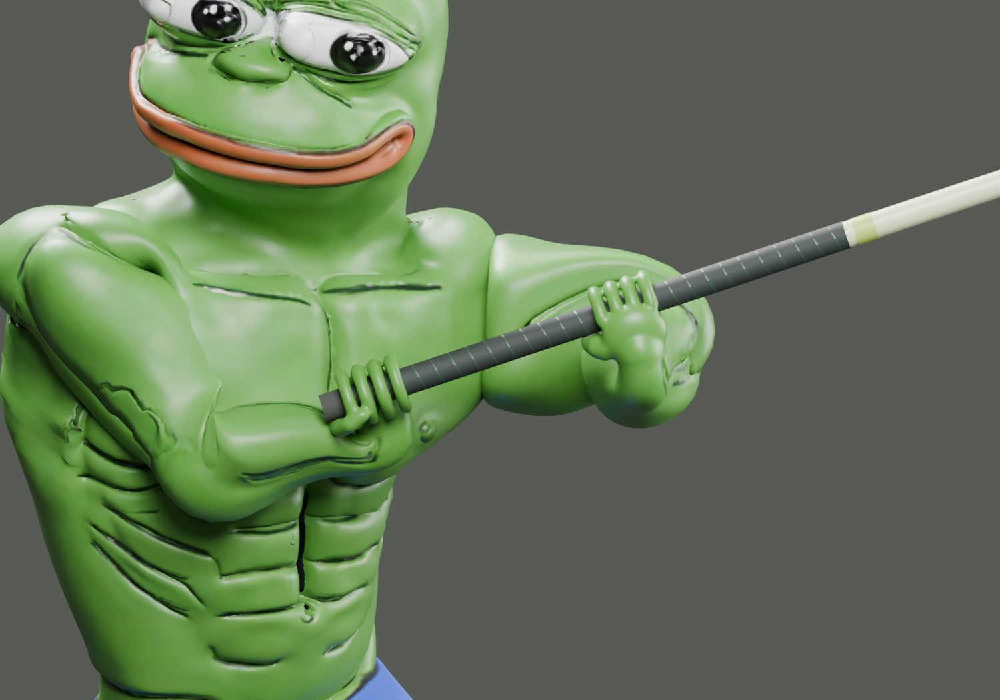

Pepe athletics / Pole workshop
Hand study ↗Ready to vault.
A full fiberglass vaulting pole, with wrapped grips and a planting tip. Both hands hold the same shaft in a staggered carry pose.
Drag to orbit · scroll to zoom
Loading pole and athlete…

